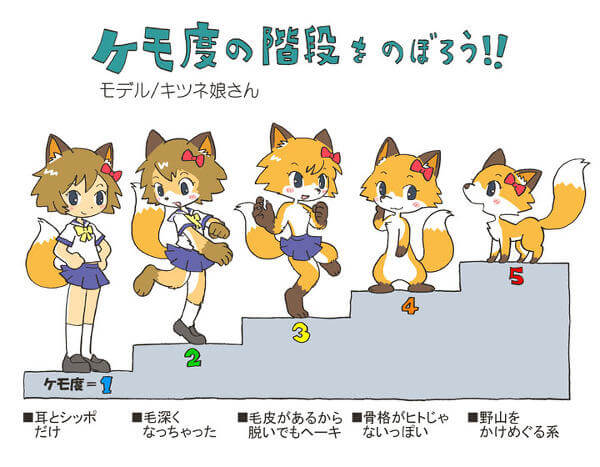

Furry 杂谈（5） - 总结及后话
兽文化属于舶来品，以其“开放、包容”的核心以及幻想形象，顺应国内的文化背景立住了脚，同时也形成了独具特点的国内兽圈。
一句话道出兽圈中的情感纽带：“每个人都有爱与被爱的权利。”正是秉承着这一观念，兽迷们在彼此的交流与互动之中寻求他人的肯定，得到一份属于自己的慰藉。以虚拟形象加强交流，让他人看到理想化的自己，让自己具有对自身美好的向往期待，正是兽文化引人入胜之处。
然而，对于国内兽圈中出现的种种问题，我们也应正面对待。很多问题，不只存在于兽圈之中，究其原因，主要是缺乏统一标准和有效的监管措施。在圈子的规模和标准尚未形成之前，带头者应发挥积极的领导作用，促使兽圈向有利的一面发展。
总的来说，兽文化的多样性与包容性给予了群体发言权，兽迷心中都怀着一份对美好未来的憧憬。最近[1]，一首由唱见超学生和制作人匹诺曹P共同合作的歌曲《好想变成兽人啊》引进国内，再度激发了国内兽圈的浪潮。我想，这就是兽迷们心中认知的共同点。也正是兽迷们凭借共同之处聚在一起，才形成了多姿多彩的兽圈。
作为圈内人，我们共同进步，携手成长；
作为圈外人，我们给予理解，贡献支持。
为此，我愿意相信，在适当的发展下，兽圈必将拥有一个美好的未来，并深刻影响着每个兽迷。
¶注释
本文依据笔者的主观认知和想法写作而成，一些观点可能有失偏颇，关于更具体客观全面对国内兽圈的论述，请移步知乎Rairis瑞斯虹的知乎专栏：兽道一百，只知其一 以及其他相关问题的回答。
本文所用部分图片系由网络渠道取得，若有侵权请联系笔者删除。
-
兽人（拟人化动物）与兽娘的区别
二者本质不同。
兽人是具有人特征（有独立意识，适当人体结构，两足直立（部分），语言等）的动物。
兽娘是具有动物特征（兽耳、尾巴等）的女性。
兽人的本体是动物而兽娘的本体是人。

- 在当今环境下，除了furry和毛毛、兽迷等词，福瑞这一词语开始迅速地在中文兽圈中传播开来。
显而易见，福瑞是furry的音译词，也同时对应了汉语中“福”“瑞”二字的美好含义。
有关福瑞和furry的更多介绍，笔者推荐各位移步此处：
从furry到福瑞，变了什么？
¶后话
我是一个理想主义者，也许通过这种方式能够构建一个我心目中未来的圈子形象。进入圈子近三年以来，我发现了更多有关这个圈子和文化的闪光点，但同时也有更多的问题暴露在我的身边，让我感到十分忧虑。高中时期难得的空闲时间，让我有幸写就了这篇杂谈。
这当然不会进入任何wiki条目（本人曾参与编辑过萌娘百科furry词条），毕竟是一家之言。虽然我可能再也达不到当初的高度，如今只能做一些修修补补的工作，但我能在重新写作这篇文章时窥见自己当初对于热爱事物的专一，也算是致敬自己的初心了。
最后非常感谢一路上陪在我身边的朋友们！
- 1.指原文写作时间，约为2021年国庆节前后 ↩